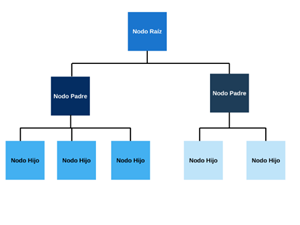

Cada conjunto de base de datos está a otro las cuales tienen un nodo padre y puede tener varios hijos el nodo que contiene padre se llama raíz y los nodos que contiene hijo se llaman hojas, este modelo permite el control de grandes volúmenes de información y facilita la creación de estructuras estables dentro de una empresa.
Son bases de datos que almacenan la información en una estructura jerarquizada, concretamente los datos son organizados de forma parecida a un árbol visto del revés.
Uno de los principales objetivos de las bases de datos jerárquicas es gestionar grandes volúmenes de datos.
Las principales características de las bases de datos jerárquicas son las siguientes:
- Se organizan en forma de árbol invertido, con un nodo raíz, nodos padre e hijos.
- El árbol se organiza en un conjunto de niveles.
- El nivel 0 se corresponde al nodo raíz y es el nivel más alto de la jerarquía.
- Los arcos (enlaces) representan las asociaciones jerárquicas entro dos nodos, carecen de nombre porque entre dos conjuntos de datos solo puede existir una interrelación.
- Uno nodo padre puede tener un número ilimitado de nodos hijos, pero a un nodo hijo solo le puede corresponder un padre.
- Todo nodo debe tener un padre, a excepción del nodo ráiz.
- Los nodos sin descendientes se llaman «hojas».
- Los niveles de la estructura jerárquica se denominan «altura».
- El número de nodos se llama «momento».
- Solo pueden existir relaciones de uno a uno de uno a varios.
- El árbol siempre se recorre en un orden prefijado.
- La estructura del árbol no se puede modificar cuando ha quedado establecida.